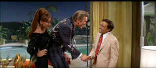
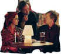

| Party, The /B,C |
| MGM/1968/99/ANA 2.35 |
As the bugle sounds opening The Party, many
contemporary viewers may not realize it's part homage, part send-up of
George Stevens classic adventure flick Gunga Din. It doesn't matter
too much because before you can say Hrundi V.Bakshi you realize that the
Indian under the turban blowing the bugle is played by Peter Sellers. His
steadfast refusal to die without yet another blow of the bugle is
indicative of the style of comedy Blake Edwards delivers in The Party:
often refusing to let a joke die. But when it's funny, it's often
hilarious.
An errant vindictive Hollywood note scribbled
while on the telephone brings invites walking disaster Bakshi to a big
time Hollywood party. From the Indian actor's Bakshi's first steps
into the Clutterbuck household are the most sidesplitting moments in the
film. Bakshi prances around like an embarrassed pussycat. Sellers is at
his greatest. What's new pussycat.
 |
|
A painful honor. ©MGM |
True, The Party is a one-note movie.
Virtually all the humor rests on the rubber shoulders of comic genius
Peter Sellers. Walking in Bakshi's shoes, and out of them, provides many
hilarious moments. Claudine Longet plays the love interest and she's
not up to much of anything. She can't muster up much more than a wan smile
and she clearly looks out of her element.
Director Edwards keeps the manic comedy coming
faster than the sit-down dinner at The Party. Edwards is one of the
best contemporary directors at delivering slapstick with panache. The
visual humor is reminiscent of the classic silent clowns. There's a little
bit of Chaplin in the hapless Bakshi. There's far too much of a soused
waiter, though he does provide many funny moments. The whole thing end in
wild chaos with the soap suds taking the place of the pies Edwards used in
the grand finale of The Great Race. Personally, I like my finishes
with pie.
The Party has not been transferred to DVD with
the fanfare it deserves. There are far too many scenes delivering less
than the max on resolution. Maybe some scenes were jittery because I
couldn't keep my head still from laughing, but I doubt it. The source
material is in mediocre condition. Lots of dirt and some color fading. The
Dolby Digital mono sound is adequate.

Selections from the Feature
Archive include articles on Akira Kurosawa, Frank Darabont, Blonde Bimbos, Hollywood Street Gangs, or Vietnam: The Hollywood Pariah, and many
more....
Sturges Emerges

Preston Sturges was Hollywood's resident comic genius for more
than a decade. His movies are timeless. Click on his image to read all
about it.

Ghost World may be one of the finest movies about outsider I have ever seen. Splendid work from Thora Birch and maybe the best Steve Buscemi ever. A stunning transfer.

The Movie Poster Archive includes extensive poster images from the films of stars like Susan Hayward, Kirk Douglas, Katharine Hepburn and many more. Our featured star is Doris Day.


Manufacturer of computer-video
interfaces, switchers, distribution amplifiers, computer-video scan
converters, and high resolution cable. Found in many high end home theater
systems.